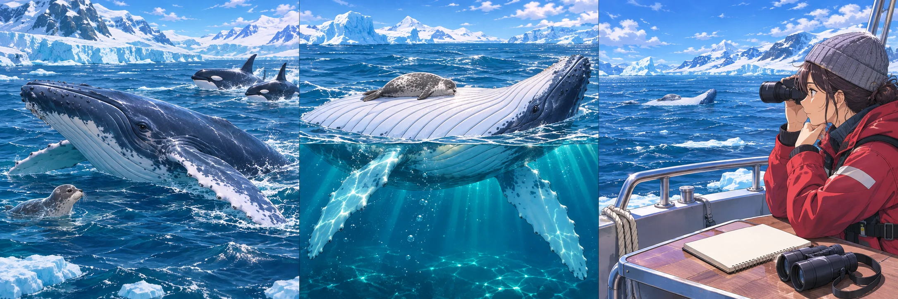
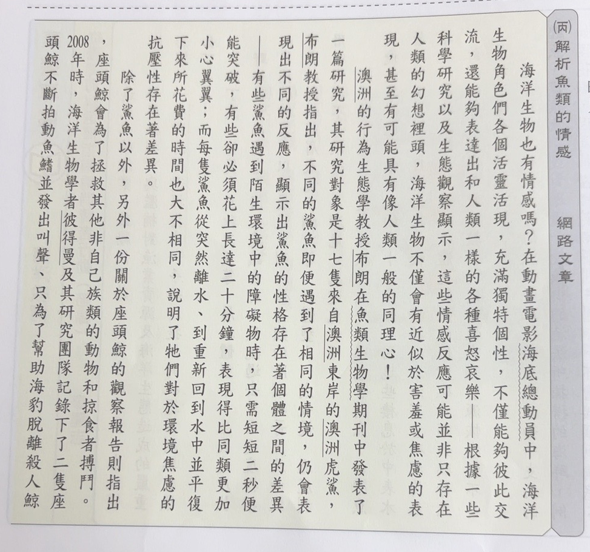
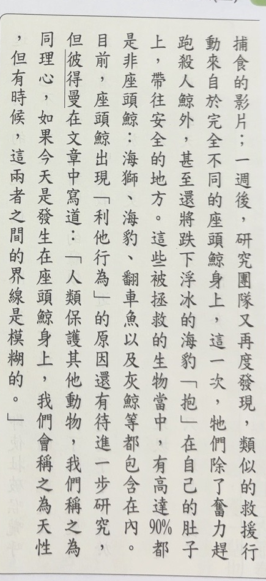
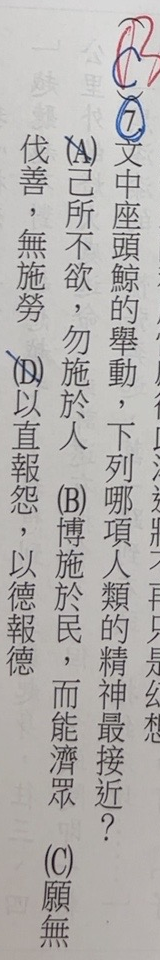

分享原卷｜第7題
完整原題
作答所需文章／材料
（丙）解析魚類的情感 網路文章 海洋生物也有情感嗎？在動畫電影海底總動員中，海洋生物角色們各個活靈活現，充滿獨特個性，不僅能夠彼此交流，還能夠表達出和人類一樣的各種喜怒哀樂。根據一些科學研究以及生態觀察顯示，這些情感反應可能並非只存在人類的幻想裡頭，海洋生物不僅會有近似於害羞或焦慮的表現，甚至有可能具有像人類一般的同理心！ 澳洲的行為生態學教授布朗在魚類生物學期刊中發表了一篇研究，其研究對象是十七隻來自澳洲東岸的澳洲虎鯊，布朗教授指出，不同的鯊魚即便遇到了相同的情境，仍會表現出不同的反應，顯示出鯊魚的性格存在著個體之間的差異——有些鯊魚遇到陌生環境中的障礙物時，只需短短二秒便能突破，有些卻必須花上長達二十分鐘，表現得比同類更加小心翼翼；而每隻鯊魚從突然離水到重新回到水中並平復下來所花費的時間也大不相同，說明了他們對於環境焦慮的抗壓性存在著差異。 除了鯊魚以外，另外一份關於座頭鯨的觀察報告則指出，座頭鯨會為了拯救其他非自己族類的動物和掠食者搏鬥。2008年時，海洋生物學者彼得曼及其研究團隊記錄下了二隻座頭鯨不斷拍動魚鰭並發出叫聲，只為了幫助海豹脫離殺人鯨捕食的影片，一週後，研究團隊又再度發現，類似的救援行動來自於完全不同的座頭鯨身上，這一次，他們除了奮力趕跑殺人鯨外，甚至還將跌下浮冰的海豹「抱」在自己的肚子上，帶往安全的地方。這些被拯救的生物當中，有高達90%都是非座頭鯨：海獅、海豹、翻車魚以及灰鯨等都包含在內。 目前，座頭鯨出現「利他行為」的原因還有待進一步研究，但彼得曼在文章中寫道：「人類保護其他動物，我們稱之為同理心，如果今天是發生在座頭鯨身上，我們會稱之為天性，但有時候，這兩者之間的界線是模糊的。」先想一想，再查看答案、解說與原圖
逐項解析
| 選項與原句 | 判讀 | 句意與判斷理由 |
|---|---|---|
| (A) 己所不欲，勿施於人 | 不選 | 自己不想承受的事，不強加別人，未如B直接對應主動廣泛救助。 |
| (B) 博施於民，而能濟眾 | 應選 | 廣施恩惠、救助眾者，最切合救助不同動物的利他行為。 |
| (C) 願無伐善，無施勞 | 不選 | 伐善為誇耀長處；施勞有加勞事於人及誇功兩義，此句不如B直接對應廣泛救助。 |
| (D) 以直報怨，以德報德 | 不選 | 公正回應怨恨、以恩報恩，本文沒有恩怨回報關係。 |
詳細說明與解題步驟
先找文章中的具體行為
座頭鯨不只保護同類，也驅趕掠食者、救助海豹等其他動物。文中還寫將海豹抱在肚子上帶往安全處。這些證據的重點是主動、廣泛幫助其他生命，最接近B，故選B。
四句逐句白話與比較
A「己所不欲，勿施於人」：自己不願承受的事，不要強加別人；重點在不施加不願承受的事，沒有B直接表達主動救助眾者。
B「博施於民，而能濟眾」：廣泛施予恩惠，並能幫助眾人。博是廣泛，濟是救助，對應文章救助不同動物的行為。
C「願無伐善，無施勞」：願不誇耀自己的長處、不把勞苦事推給他人。「伐善」指自誇；教育部辭典在「施勞」第一義直接引本句，釋為把勞事加諸他人。此外「施勞」也有張揚功勞一義，原AI採不表彰功勞的說明屬此另一釋義。兩種解讀均不如B直接切合本題廣泛主動救助的證據，不靠把某一義說成唯一來選答。
D「以直報怨，以德報德」：以公正態度回應怨恨，以恩德回報恩德；重點在回應恩怨，本文沒有報恩、報怨關係。
閱讀限制
文章以同理心類比動物行為，但結尾明說利他原因仍待研究，不宜斷言座頭鯨具有和人類完全相同的道德意識。90%是文中這些救援紀錄所述比例，不擴成所有海洋生物、所有救援都必如此。虎鯊研究與座頭鯨救援是不同材料，不能混成同一研究對象。
字義核對：[教育部「博施濟眾」](https://dict.revised.moe.edu.tw/dictView.jsp?ID=13242&la=0&powerMode=0)、[「伐善」](https://dict.revised.moe.edu.tw/dictView.jsp?ID=33238&la=0&powerMode=0)、[「施勞」](https://dict.revised.moe.edu.tw/dictView.jsp?ID=127169&la=0&powerMode=0)。
本文救援情境：幫助不同動物

① 找行為：主動救助其他動物
文章寫座頭鯨驅趕掠食者，救助海豹等其他動物。不是只保護同類，而是把幫助擴及不同生命。
依本文：海豹被抱在肚子上
② 對應B：博施、濟眾
「博」是廣泛，「濟」是救助；B直接表達廣泛主動幫助。A著重不把不願承受的事加諸他人，較不切合這段救援證據。
區分：可見的行為、待研究的動機
③ 類比精神，動機仍待研究
題目可把行為類比人類德性；文章卻說利他行為原因仍待研究。不能因選B，就斷言已證實座頭鯨具有與人類相同的同理心。
④ 從救援行為找最貼近的名句
答案 B：博施於民，而能濟眾
- 抓準主動、廣泛救助的共同點。
- A是不強加，C另談自誇與施勞，D著重恩怨回應。
- 德性類比不等於利他動機已獲科學證實。
核對註記：已實看真正上傳原卷與裁圖，核對完整題幹、全部四選項及共用閱讀；日期為原始提問訊息的台灣日期，未提供實際考試日。未確認對應冊次、章節，歸綜合。
原圖（僅本題）


